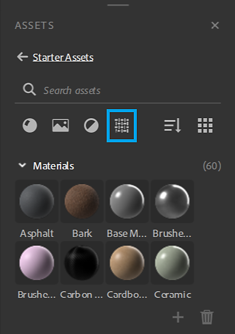
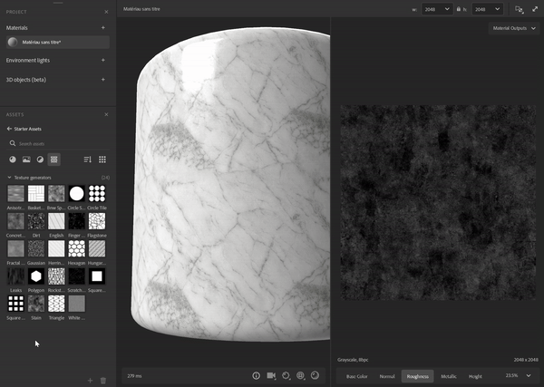
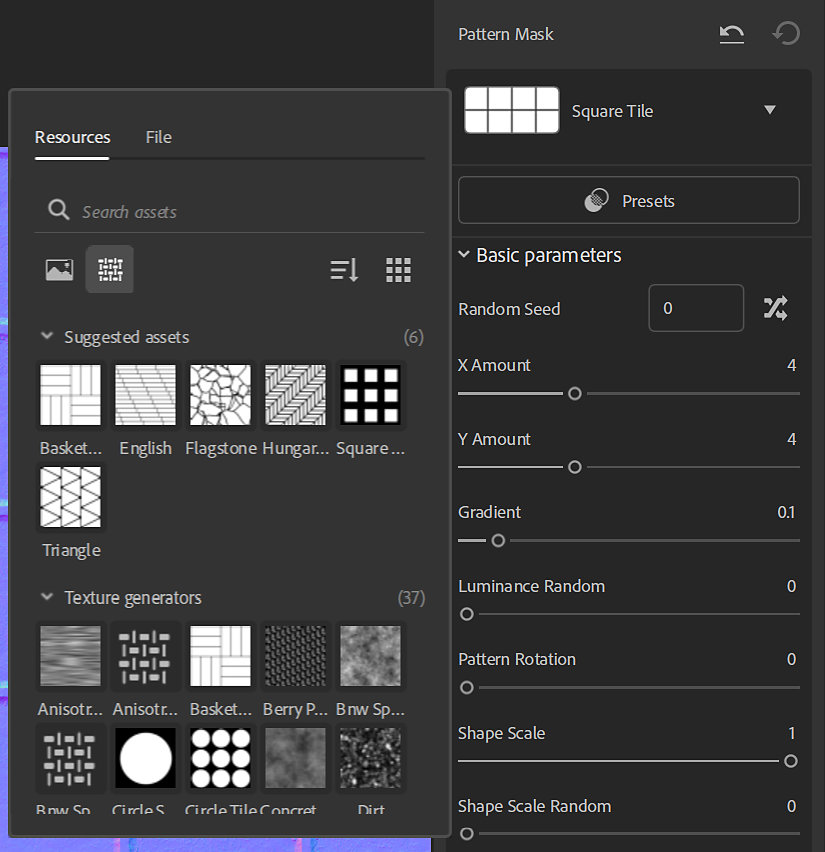
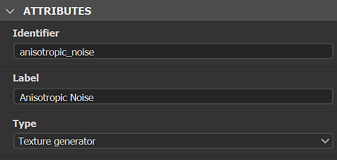
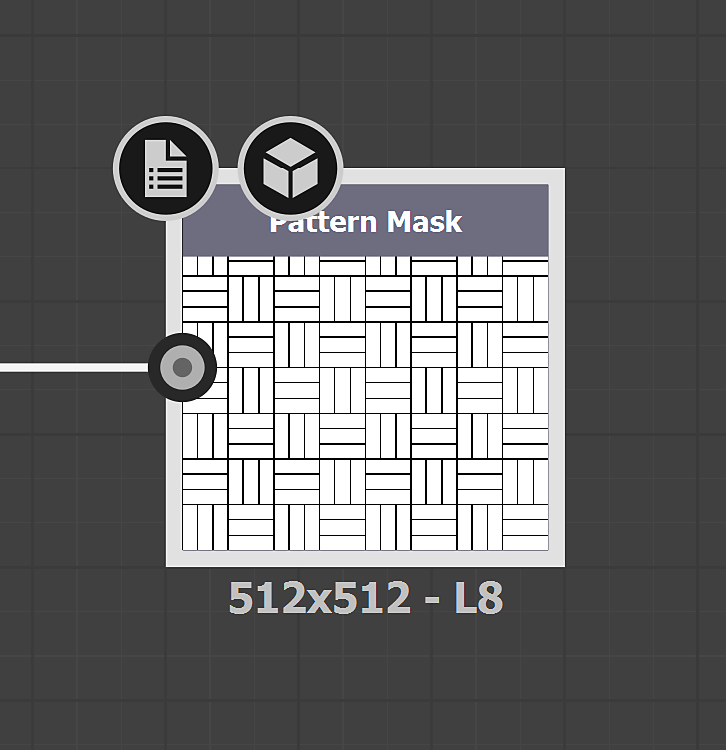
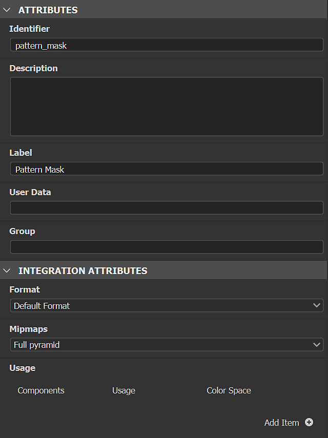
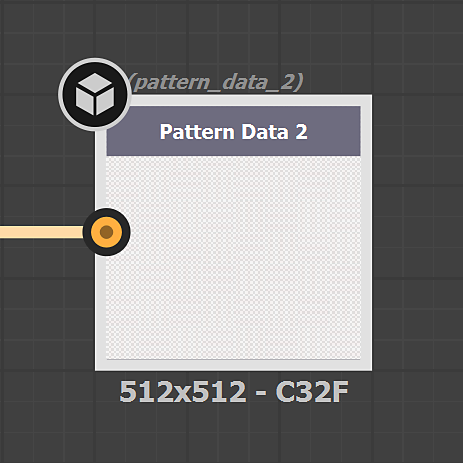
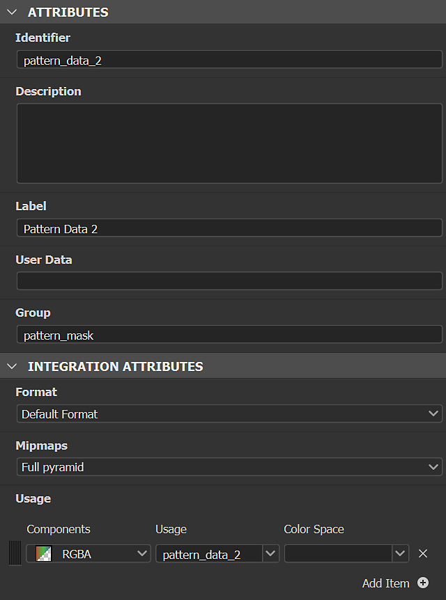

Texture Generators are a type of assets in Substance 3D Sampler. They can be filtered in the Assets panel with the Texture Generators icon.
Texture Generators

Texture generators give improved control over material creation using parametric noises, patterns and grunges options. The generated imagery can be used in masks or channels maps.

How to use Texture Generators
Channel maps
Drag and drop a texture generator in the 3D view, 2D view or the layer stack and select a channel to use it.

A Fill filter will be created in the stack with the Texture Generator in the right input. You can access the Texture Generator properties in the properties panel.
Filters
Some filters such as Parquet use by default texture generators for pattern masks.. Others work with an image or a Texture Generator like the Pattern filter.
In filters you can use texture generators in any image property, for instance custom masks.
Filters can suggest generators to work with, they are displayed in the new asset picker, when you click in an image property.

Tutorial
You'll find all Substance 3D Sampler's tutorials on our learning page.
How to create custom Texture Generators
You can import Texture Generators made with Adobe Substance 3D Designer via the Import button in the Layer Stack actions. They must be built in a specific way in Designer to work correctly while imported in Sampler.
Type
Choose "Texture generator" as graph type.

Outputs
The filters' output node of the filter must have the identifier or usage defined:
- The main output of the Texture Generator shouldn't have any usage. Then, it can be recognize as the main output by 3D Sampler.


- The secondary output(s) of the Texture Generator needs usage to be used.
Their Group name would be the main output Identifier.
Note
If you build your own Filters and Texture Generators to work together, we recommend to use custom usages according to the output Identifiers.


Caution
If you want your custom Texture Generator to be in a filter Suggested assets list, you need to add the following userdata in your Substance graph:
alchemist::suggestedfilters=[FilterName,FilterName2];
Note
The userdata can be used with custom filters.
Format
Export your filter as Substance Archive file (.sbsar)
Note
You can expose filter parameters to control the filter directly in Sampler. See how-to here